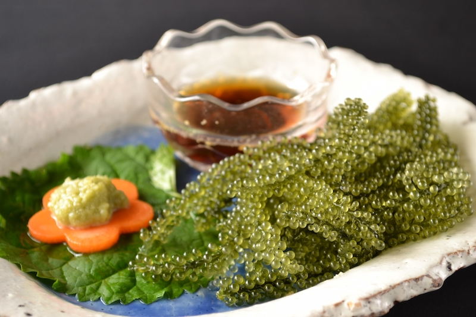

Umibudou literally translates as "Sea Grapes." It's a kind of seaweed
but instead of leaves it has little bubbles growing on its stems.
Thus the serving looks like small, green grapes.
The bubbles break on
your tongue and release a slightly salty taste of pure Southern Sea freshness.
It is more delicious when you are eating with some kind of japanese soysauce.

Popularity
Rating
Taste